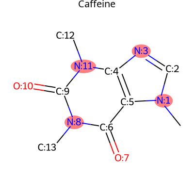
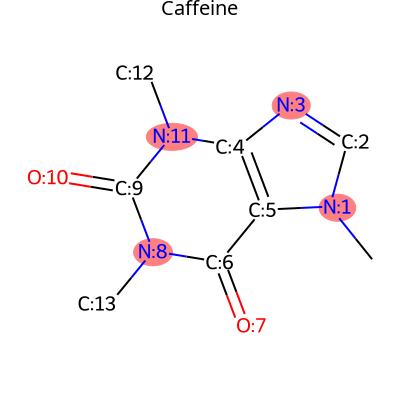
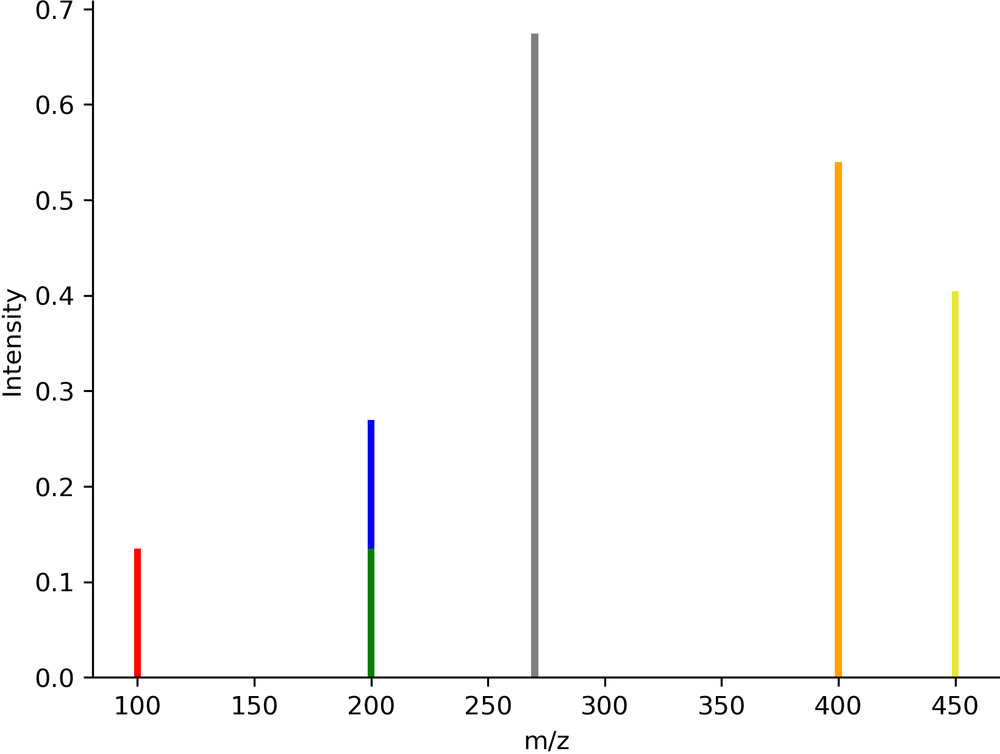

Visualizer
Draw a molecule using RDKit |
|
Draw the alignment of multiple spectrums |
|
draws a fragment of the molecule. |
|
Draw the modifications from molecule 1 to molecule 2 |
|
Draw a molecule and color the atoms based on the scores |
|
Draw a spectrum |
More information on the features provided here are available at
rdkit: http://www.rdkit.org/ matplotlib: http://matplotlib.org/
GNPS Utils - Visualizer Module
This module provides functionality to visualize data from GNPS.
Author: Shahneh
- utilities.visualizer.draw_alignment(spectrums, matches=None, output_type='png', normalize_peaks=False, size=None, dpi=300, draw_mapping_lines=True, ppm=40, x_lim=None, **kwargs)[source]
Draw the alignment of multiple spectrums
- Parameters:
spectrums (list of SpectrumTuple or list of list of tuples (mz, intensity)) – list of spectrums to draw
matches (list of list of tuples or list of tuples, optional (default=None)) – matching between the spectrums
output_type (str, optional (default='png')) – type of output (png or svg)
normalize_peaks (bool, optional (default=False)) – normalize the peaks or not
size (tuple, optional (default=None)) – size of the figure
dpi (int, optional (default=300)) – dpi of the stored image
draw_mapping_lines (bool, optional (default=True)) – draw the mapping lines
ppm (float, optional (default=40)) – ppm value for the alignment
x_lim (tuple, optional (default=None)) – x limit of the figure
kwargs (dict) – additional arguments for drawing the spectrum in matplotlib
- Returns:
img
- Return type:
numpy array or str
Examples
import modifinder.utilities.visualizer as mf_vis from matplotlib import pyplot as plt import numpy as np peaks1 = list(zip([100, 200, 270, 400, 450], [0.1, 0.2, 0.5, 0.4, 0.3])) peaks2 = list(zip([100, 230, 350, 360, 430], [0.1, 0.3, 0.2, 0.4, 0.5])) peaks3 = list(zip([120, 230, 300, 380, 550], [0.1, 0.2, 0.5, 0.4, 0.3])) matches = [[(0, 0), (1, 1), (3, 4)], [(0, 0), (1, 1), (3, 3)]] img = mf_vis.draw_alignment([peaks1, peaks2, peaks3], matches=matches, output_type='png', normalize_peaks=True, x_lim=(0, 550)) plt.imshow(img) plt.axis('off') plt.show()

- utilities.visualizer.draw_frag_of_molecule(mol, fragment: int, output_type='png', **kwargs)[source]
draws a fragment of the molecule. The fragment is represented by a binary string where 1 indicates the presence of the atom and 0 indicates the absence.
- Parameters:
mol (rdkit molecule) – Molecule to draw the fragment for
fragment (int) – fragment represented by a binary string
output_type (str, optional (default='png')) – type of output (png or svg)
kwargs (dict) – additional arguments for drawing the molecule in rdkit
- Returns:
img
- Return type:
numpy array or str
Examples
import modifinder.utilities.visualizer as mf_vis from matplotlib import pyplot as plt from rdkit import Chem mol = Chem.MolFromSmiles('CN1C=NC2=C1C(=O)N(C(=O)N2C)C') def mol_with_atom_index(mol): for atom in mol.GetAtoms(): atom.SetAtomMapNum(atom.GetIdx()) return mol mol = mol_with_atom_index(mol) fragment = int("110111", 2) # Convert binary to decimal img = mf_vis.draw_frag_of_molecule(mol, fragment, output_type='png') plt.imshow(img) plt.axis('off') plt.show()

- utilities.visualizer.draw_modifications(mol1, mol2, output_type='png', show_legend=True, legend_font=15, legend_position=None, highlight_common=True, highlight_added=True, highlight_removed=True, modification_only=False, **kwargs)[source]
Draw the modifications from molecule 1 to molecule 2
- Parameters:
mol1 (rdkit molecule, str) – rdkit molecule or str for SMILES or InChI or GNPS identifier (USI or Accession)
mol2 (rdkit molecule) – rdkit molecule or str for SMILES or InChI or GNPS identifier (USI or Accession)
output_type (str, optional (default='png')) – type of output (png or svg)
show_legend (bool, optional (default=True)) – show the legend or not
legend_font (int, optional (default=15)) – font size of the legend
legend_position (tuple, optional (default=None)) – position of the legend
highlight_common (bool, optional (default=True)) – highlight the common atoms
highlight_added (bool, optional (default=True)) – highlight the added atoms
highlight_removed (bool, optional (default=True)) – highlight the removed atoms
modification_only (bool, optional (default=False)) – only highlight the modification edges, if highlight_removed or highlight_added is False, this will only show the enabled ones
- Returns:
img – image of the modification
- Return type:
numpy array or str
Examples
import modifinder.utilities.visualizer as mf_vis from matplotlib import pyplot as plt from rdkit import Chem smiles1, smiles2 = 'N[C@@H](CCC(=O)N[C@@H](CS)C(=O)NCC(O)=O)C(O)=O', 'CCCCCCSCC(CNCC(=O)O)NC(=O)CCC(C(=O)O)N' mol1 = mf_vis.draw_molecule(smiles1, label="mol1") mol2 = mf_vis.draw_molecule(smiles2, label="mol2") modification = mf_vis.draw_modifications(smiles1, smiles2, label="modifications") fig, ax = plt.subplots(1, 3, figsize=(15, 5)) ax[0].imshow(mol1) ax[1].imshow(mol2) ax[2].imshow(modification) for a in ax: a.axis('off') plt.show()

- utilities.visualizer.draw_molecule(mol, output_type='png', font_size=None, label=None, label_font_size=20, label_color=(0, 0, 0), label_position='top', **kwargs)[source]
Draw a molecule using RDKit
- Parameters:
mol (rdkit molecule or str) – rdkit molecule or str for SMILES or InChI or GNPS identifier (USI or Accession)
output_type (str) – type of output (png or svg)
font_size (int, optional (default=None)) – font size for the labels
label (str, optional (default=None)) – label for the molecule
label_font_size (int, optional (default=20)) – font size for the label
label_color (tuple, optional (default=(0,0,0))) – color of the label
label_position (str, optional (default='top')) – position of the label (top or bottom)
kwargs (dict) – additional arguments for drawing the molecule in rdkit like highlightAtoms, highlightAtomColors, highlightBonds, highlightBondColors, highlightAtomRadii, etc.
- Returns:
img – image of the molecule
- Return type:
numpy array or str
Examples
import modifinder.utilities.visualizer as mf_vis from matplotlib import pyplot as plt img = mf_vis.draw_molecule('CN1C=NC2=C1C(=O)N(C(=O)N2C)C', output_type='png', label="Caffeine") plt.imshow(img) plt.axis('off') plt.show()
 
import modifinder.utilities.visualizer as mf_vis from matplotlib import pyplot as plt from rdkit import Chem def mol_with_atom_index(mol): for atom in mol.GetAtoms(): atom.SetAtomMapNum(atom.GetIdx()) return mol mol = Chem.MolFromSmiles('CN1C=NC2=C1C(=O)N(C(=O)N2C)C') mol = mol_with_atom_index(mol) highlightAtoms = {1, 3, 11, 8} img = mf_vis.draw_molecule(mol, output_type='png', label="Caffeine", highlightAtoms=highlightAtoms) plt.imshow(img) plt.axis('off') plt.show()
{kind=link}
- utilities.visualizer.draw_molecule_heatmap(mol, scores, output_type='png', show_labels=False, shrink_labels=False, annotation_scale=1, show_legend=True, legend_width=50, legend_font=40, **kwargs)[source]
Draw a molecule and color the atoms based on the scores
- Parameters:
mol (rdkit molecule) – Molecule to Draw the heatmap for
scores (list) – list of scores for each atom (the order should be the same as the order of atoms in the molecule)
output_type (str, optional (default='png')) – type of output (png or svg)
show_labels (bool, optional (default=False)) – add labels to the atoms
shrink_labels (bool, optional (default=False)) – shrink the labels to more compact form
annotation_scale (float, optional (default=1)) – size of the labels (font size)
show_legend (bool, optional (default=True)) – show the legend or not
legend_width (int, optional (default=50)) – width of the legend in pixels
legend_font (int, optional (default=40)) – font size of the legend
- Returns:
img
- Return type:
numpy array or str
Examples
import modifinder.utilities.visualizer as mf_vis from matplotlib import pyplot as plt import numpy as np mol = Chem.MolFromSmiles('CN1C=NC2=C1C(=O)N(C(=O)N2C)C') scores = np.random.rand(mol.GetNumAtoms()) img = mf_vis.draw_molecule_heatmap(mol, scores, label="Caffeine", show_labels=True, legend_font=20) plt.imshow(img) plt.axis('off') plt.show()

- utilities.visualizer.draw_spectrum(spectrum, output_type='png', normalize_peaks=False, colors: dict = {}, flipped=False, size=None, show_x_label=False, show_y_label=False, font_size=None, bar_width=3, x_lim=None, dpi=300, **kwargs)[source]
Draw a spectrum
- Parameters:
spectrum (Spectrum or list of tuples or USI or Accession) – Spectrum to draw
output_type (str, optional (default='png')) – type of output (png or svg)
normalize_peaks (bool, optional (default=False)) – normalize the peaks or not
colors (dict, optional (default={})) – dictionary of colors for the peaks, keys are the indices of the peaks, if value is a list, the first value is the color of top half and the second value is the color of the bottom half.
flipped (bool, optional (default=False)) – flip the spectrum or not
size (tuple, optional (default=None)) – size of the figure
show_x_label (bool, optional (default=False)) – show x label or not
show_y_label (bool, optional (default=False)) – show y label or not
font_size (int, optional (default=None)) – font size of the labels
bar_width (int, optional (default=3)) – width of the spectrum bars
x_lim (tuple, optional (default=None)) – x limit of the figure
dpi (int, optional (default=300)) – dpi of the stored image
kwargs (dict) – additional arguments for drawing the spectrum in matplotlib
- Returns:
img
- Return type:
numpy array or str
Examples
import modifinder.utilities.visualizer as mf_vis from matplotlib import pyplot as plt import numpy as np mz = [100, 200, 270, 400, 450] intensity = [0.1, 0.2, 0.5, 0.4, 0.3] colors = { 0: 'red', 1: ['blue', 'green'], 3: '#FFA500', 4: (0.9,0.9,0.2) } img = mf_vis.draw_spectrum(list(zip(mz, intensity)), output_type='png', show_x_label=True, show_y_label=True, colors=colors) plt.imshow(img) plt.axis('off') plt.show()
{kind=link}